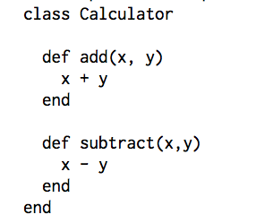
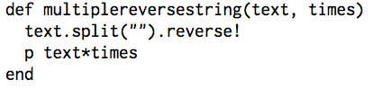

Object-oriented programming and function programming
9/5/2015
Programming falls into one of two big schools: object-oriented and function. Each style of programming has its own individual merits and uses and can be the subject of debate between different types of programmers. I will try to explain the differences between the two schools and highlight where each one shines.
Object-oriented programming (OOP) is based around small programming objects known as classes. Within the OOP framework, these different classes communicate with one another through the use of messages. Each class tries to have a single function as to limit what it can do. This allows programmers to reuse classes easily, implement changes without affecting large pieces of code, and make sure that all code is easily readable. Within any functional program, different objects work together in the same environment to achieve the programmer's goals.
An example of a simple object would be a simple add and subtract calculator, seen here:

This calculator is object-oriented because it sticks to its simple function of computing addition and subtraction. Within the class itself, the add and subtract functions are kept separate since each function has a singular purpose. If someone needs to modify one of the functions, the function can be changed without affecting the other one. If someone has some data and needs to put it through the calculator, that person can output code Calculator.new.subtract(x,y) to send a message to the calculator and have it compute a subtraction.
Functional programming, as its name suggests revolves around functions. Programmers can write functions out in a blank code file, identify arguments, and have the functions work through the arguments to generate an output. The functions can work only with the given arguments presented to them at the time, and there is no hidden context as the functions go through their calculations. Although OOP and functional programming are inherently different in a vacumn, you can combine the two by working with functional programming in an OOP framework. This is commonly seen across OOP-heavy lanaguages such as Ruby.
A simple function in Ruby is as follows:

This function works in a vacumn to take two arguments, a string and an integer to reverse the string and print it out a number of times. It's not relying on other objects to receive or send messages; it just has a single function. Functional programming is simpler in this aspect, as what you see is what you get. Although I do have some experience with functional programming, I've yet to see the full scope of what it can do in terms of forming programs, so I'll have to hold off on that aspect of it.